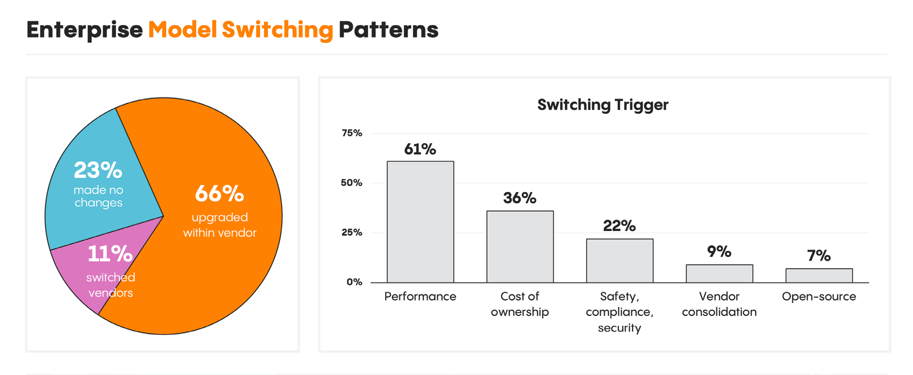
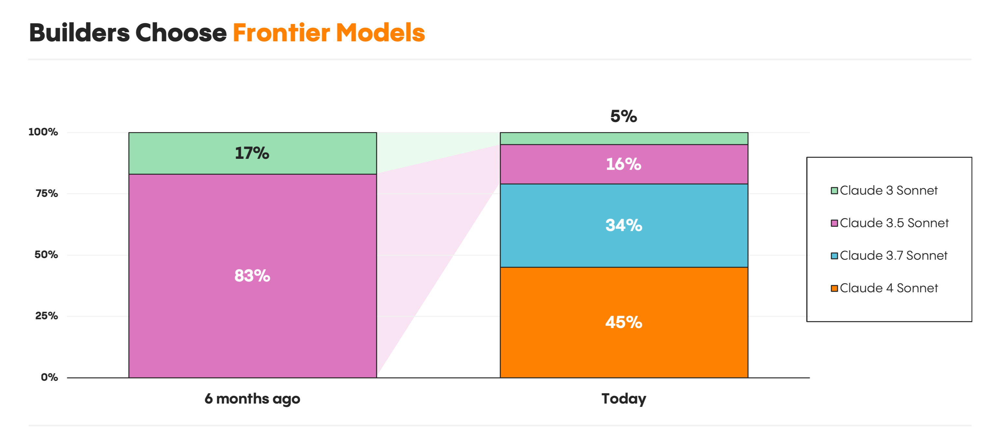
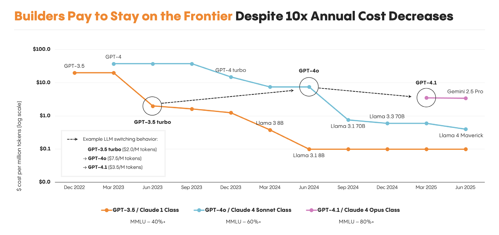

there's a popular argument that ai models will commoditize the way hardware did. ram, cpus, storage: they all became interchangeable once they crossed a performance threshold. the thinking goes that models will follow the same path. as open‑source catches up and prices drop, the frontier providers will lose their edge.
i think this is wrong, or at least, much slower than people expect. the reason comes down to a fundamental asymmetry in how trust works.
with ram, quality is binary and verifiable. the program either runs or it doesn't. you can objectively confirm that 4gb is enough for your workload. so once a component crosses the "good enough" threshold, you stop caring who made it. price wins.
with ai models, quality is subjective, inconsistent, and hard to verify. you often can't tell if a smaller model gave you a subtly wrong answer. a flawed analysis looks the same as a good one until the decision it informed blows up. buggy code compiles and runs fine until an edge case breaks production. the cost of being wrong is higher than the cost of "overpaying" in compute by using a bigger model.
this is more like choosing a doctor than choosing ram. you go to the best doctor even for a routine checkup, because you trust their judgment and you can't always tell when a routine issue is actually serious. the trust premium persists even when the objective capability gap narrows.
to be clear: the trust premium isn't the whole story. frontier models are genuinely better, and users can often feel the difference. anyone who has used claude and gpt side by side for a coding task can tell that one is sharper. and even within a single provider, there are real capability gaps: opus can handle problems that sonnet simply cannot. the frontier isn't just a brand. it delivers real, perceptible quality.
but here's the thing: the trust effect and the quality effect reinforce each other. even when the objective gap shrinks to the point where a cheaper model could handle your task, you still can't confidently identify which tasks those are. so you default to the best. the real quality advantage builds the trust, and the trust persists even into the zones where the gap has narrowed. that's what makes this dynamic so durable.
menlo ventures' 2025 mid‑year llm report has data that supports this. 66% of enterprise builders upgraded models within their existing provider. only 11% switched vendors entirely. the rest made no changes at all. trust is sticky, and switching is rare.

source: menlo ventures, 2025 mid‑year llm market update
even more telling: when new frontier models launch, builders don't pocket the savings from cheaper older models. they move en masse to the latest, most capable option. within one month of claude 4's release, claude 4 sonnet captured 45% of anthropic's usage while sonnet 3.5 dropped from 83% to 16%. performance hunger, not price sensitivity, drives behavior.

source: menlo ventures, 2025 mid‑year llm market update
and this pattern holds even as prices fall dramatically. model costs have dropped roughly 10x year over year, but builders don't capture those savings by downgrading. they just keep upgrading to the best available model at whatever it costs.

source: menlo ventures, 2025 mid‑year llm market update
there's one more nuance worth calling out. commoditization will likely happen unevenly across use cases. for structured, narrow tasks like classification or data extraction, cheaper models may well become "good enough" faster, because the output is easier to verify. but for open‑ended reasoning, strategy, analysis, and creative work, where verification is essentially impossible, the trust premium will persist much longer.
none of this means models will never commoditize. they probably will, eventually. but the timeline will be longer than hardware commoditization patterns suggest. trust is hard to build and slow to transfer. verification is expensive and unreliable. and the cost of a subtly wrong answer in a high‑stakes context far exceeds the cost of paying more for a frontier model.
frontier models like opus and gpt‑5 may retain pricing power and user loyalty for longer than most people expect. not because they're always meaningfully better, but because when they are better, it matters a lot, and their users can never be quite sure when they aren't.